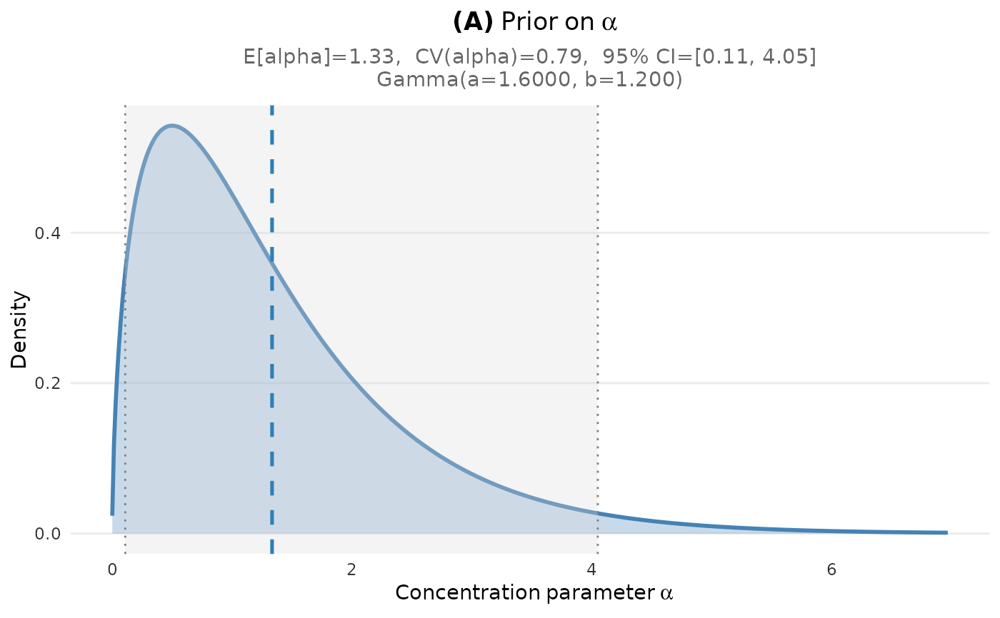
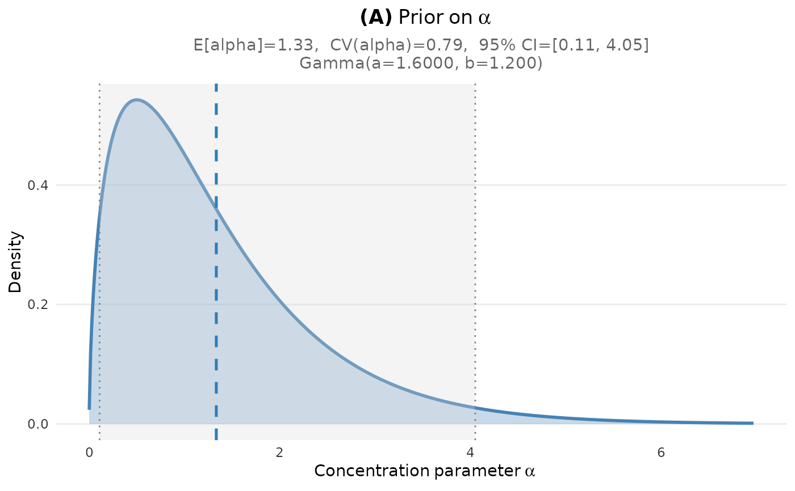

Plot Prior Density of Alpha
Usage
plot_alpha_prior(
fit = NULL,
a = NULL,
b = NULL,
engine = c("ggplot2", "base"),
base_size = 11,
ci_level = 0.95,
n_grid = 500,
show = TRUE
)Arguments
- fit
A DPprior_fit object, or NULL if a and b provided directly.
- a
Numeric; shape parameter (used if fit is NULL).
- b
Numeric; rate parameter (used if fit is NULL).
- engine
"ggplot2" (default) or "base".
- base_size
Base font size.
- ci_level
Credible interval level (default 0.95).
- n_grid
Number of grid points.
- show
If TRUE, print the plot.
See also
DPprior_fit for fitting, plot.DPprior_fit for S3 plot method
Other visualization:
DPprior_colors(),
plot_K_prior(),
plot_dual_comparison(),
plot_dual_dashboard(),
plot_prior_dashboard(),
plot_tradeoff_curve(),
plot_tradeoff_dashboard(),
plot_w1_prior(),
theme_DPprior()
Examples
# From fit object
fit <- DPprior_fit(J = 50, mu_K = 5, var_K = 8)
#> Warning: HIGH DOMINANCE RISK: P(w1 > 0.5) = 48.1% exceeds 40%.
#> This may indicate unintended prior behavior (Lee, 2026).
#> Consider using DPprior_dual() for weight-constrained elicitation.
#> See ?DPprior_diagnostics for interpretation.
plot_alpha_prior(fit)

 # Direct parameter specification
plot_alpha_prior(a = 1.6, b = 1.2)

# Direct parameter specification
plot_alpha_prior(a = 1.6, b = 1.2)
